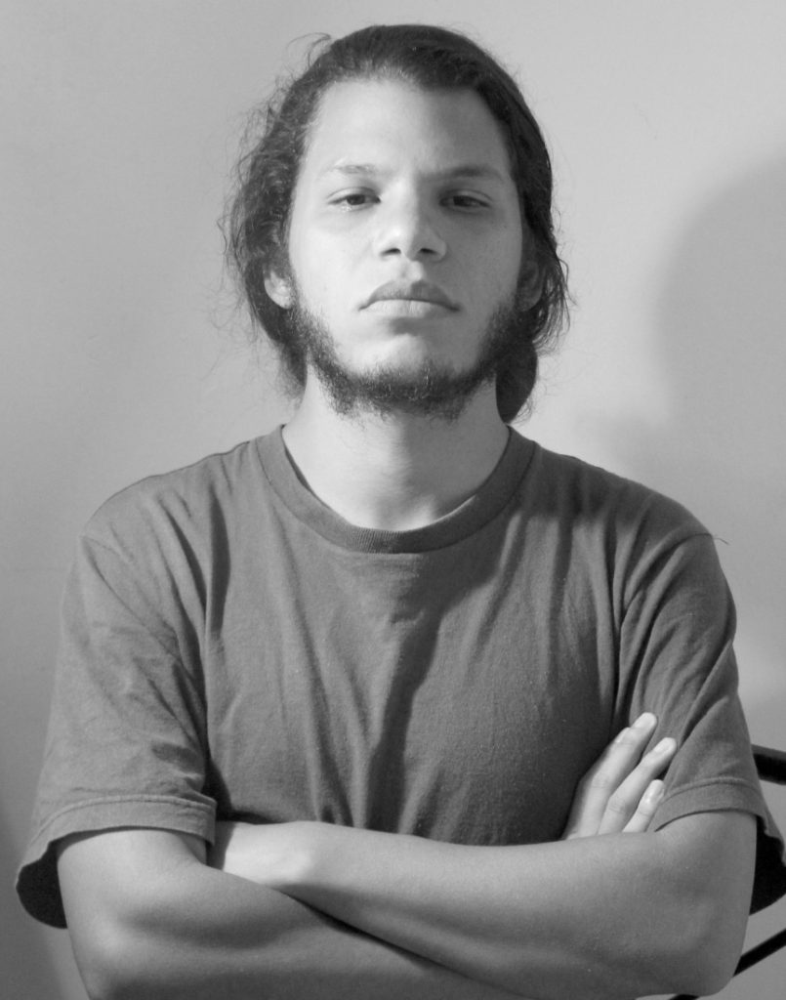

Bio

Vive y trabaja en Carrizal (Miranda, Venezuela).
Artista de nuevos medios interesado en la intersección entre arte, política y sociedad. Su trabajo explora las relaciones de poder en tensión con la cultura visual contemporánea, así como las posibilidades activistas de la práctica artística.
Actualmente investiga las posibilidades semánticas y contextuales del lenguaje digital, audiovisual y algorítmico a través de obras que combinan el dibujo tradicional con la gráfica y la animación digital, por una parte, y el arte generativo e interactivo a partir de lenguajes de programación como javascript y la librería p5.js. También ha desarrollado proyectos de videoarte, performance y net.art.
Influido por el conceptualismo latinoamericano, valora el proceso por sobre el producto u objeto artístico, así como la importancia del contexto en la práctica artística contemporánea desde una perspectiva crítica.
Formación académica
- 2013 – Licenciado en Artes Plásticas, mención Medios Mixtos – Universidad Nacional Experimental de las Artes (UNEARTE), Caracas, Venezuela
- 2004 – Técnico Medio en Artes Visuales, mención Artes Gráficas – Escuela Técnica de Artes Visuales “Cristóbal Rojas”, Caracas, Venezuela
Premios
- 2025 – Premio a la Integración Tecnológica en el Arte, Fundación Telefónica Movistar de Venezuela, por la obra instalativa Movimiento Perpetuo (rubedox)
Exposiciones colectivas (selección)
2025
- 25º Salón Jóvenes con FÍA (Centro Cultural UCAB), Caracas, Venezuela
- Colectiva en Espacio Independiente “La Carpintería”, Caracas, Venezuela
- Colectiva “47 Ronin”, Museo de Arte Contemporáneo de Caracas, Venezuela
2019
- Festival de Arte Activista Latinoamericano, Montevideo, Uruguay (muestra de videoarte Revoluciones)
- Por los Caminos Verdes, Goethe Institut / Hacienda La Trinidad, Caracas, Venezuela
- Festival Internacional de Videoarte 1 minuto, Cuenca, España
2016
- Salón Octubre Joven 2016, Museo de Arte de Valencia, Venezuela
- 3era Bienal de Artes Gráficas “Homenaje al Maestro Alirio Palacios”, Museo de la Estampa y el Diseño Carlos Cruz-Diez, Caracas, Venezuela
2011
- Salón “Octubre Joven”, Ateneo de Valencia, Venezuela
2010
- Quémese después de verse, Espacio “El Apartaco” (Av. Sucre, Los Dos Caminos), Caracas, Venezuela
- Miradas a Europa, Centro Cultural Chacao, Caracas, Venezuela
Publicaciones y actividades académicas
- 2025 – Conversatorio en torno al 25 Salón Jóvenes con FÍA, AICA Capítulo Venezuela. Centro Cultural UCAB, Caracas.
- 2016 – Ponencia “De la obra de arte como mercancía a la práctica artística útil”. Seminario “Arte y Política”, I Bienal del Sur “Pueblos en Resistencia”.